Hvithuggfjellene
Hvithuggfjellene (the Whitefang Mountains) danner nordgrensen for Verdens Ende (the World's End), fra Huffeltindene Huffeltindene i nordvest, langs hele Storskogen Storskogen og Nord-Manmarch Nord-Manmarch, til Redselselva Redselselva og videre i øst. Bortenfor dem ligger ingenting annet enn De Frosne Ødemarkene De Frosne Ødemarkene.
Fjellene er høye og takkete, bratte og avvisende. Likevel skjuler de en nesten ubeskrivelig skjønnhet: fossefall, dype furuskoger, vidstrakte enger. De skjuler også et overraskende antall bosetninger. Sperrepasset Sperrepasset ligger nærmest Stonetop, men mange flere ligger lenger inn.
Inntrykk
Alltid
- Snødekte tinder, som mektige tenner
- Vind: ulende, hviskende, i kast
- Aper som skriker og skravler i dalene og hopper gjennom trærne
- Bønneflagg som blafrer i vinden
- Gleden over å nå en topp; fortvilelsen når du skjønner at det bare var en rygg, og at du bare er halvveis
 Vår
Vår
- Skråninger og daler lysende av rododendron: lilla, rødt og oransje
- Sildring og brus av smeltevann
Kroker
- Uværet rundt Tors Neve blir kraftigere; fargene skifter mot rødt og gult
- En flokk kyakaara kyakaaraer sniker seg ut av fjellene og har kastet sine øyne på Stonetop
- En kjøpmann fra sør er fast bestemt på å finne en fjellbygd for å handle elfenbein og fin ull
- Fjellaper Munk har en artefakt/en bit overlevering i skattehaugen sin
- En shantyara-lærling trenger hjelp til å hente sverdet til sin døde mester fra bhokaen bhokaen som drepte ham
 Sommer
Sommer
- Frodig grønt nede; strenge, fargeløse tinder oppe
- Fuglesang som gjaller og gjaller
 Høst
Høst
- Enger som har blitt brune og røde og gylne
- Tåke som fyller dalene, skyer som glir forbi over
 Vinter
Vinter
- Snø som dekker dalene og kveler passene
- Tårer som fryser, svette som gjennomvæter deg under de varme klærne
Tors Neve
Nesten rett nord for Stonetop stikker dette ensomme fjellet opp over naboene sine: Tors Neve (Tor's Fist).
Det er ikke den høyeste toppen i Hvithuggfjellene, men den er høy nok. Når sommerens uvær ruller opp fra sør og slår mot fjellene, virvler de verste av dem rundt Tors Neve. De pisker toppen med lyn, og etterpå danser grønne og lilla lys rundt kronen.
Hva er der oppe?
Tors Neve skjuler tydeligvis en gåte, men hva slags gåte er opp til deg. Kanskje fjelltoppen skjuler …
- graven til Stormfangeren Tårnruinen, eller sønnen hennes, eller elskeren hennes;
- en kløft som selve Steinen Landsbyen Stonetop ble hugget ut fra;
- en av de siste tretten Rimfrostens Herrer Rimfrostens Herrer, fortsatt i stase, beskyttet av mektige tulpaer Rimfrostens Herrer;
- en mektig stormånd, fordervet av Tingene Der Nede, men bundet der av eldgammel magi fra Rimfrostens Herrer;
- riket til en mektig, lunefull Fae Fae;
- en knust portal Urkrefter, revet opp og ødelagt;
- et folk av stor vekst som tilber Tor Tor, Regnmakeren;
- den siste av Stormens Herrer Stormens Herrer, gretten og reservert;
- en kombinasjon av det ovenstående; eller
- noe helt annet.
Legge en Kurs
For å nå toppen av Tors Neve:
Terreng
Velg 1 eller kombiner 2, eller la noen slå Skjebneterningen ().
| 1-2 | Isbre/snøfelt/snødekke |
|---|---|
| 3 | Innsjø/elv/bekk/foss |
| 4 | Vassjuk jord, frossen eller gjørmete |
| 5 | Skog/lund/treklynge/busker |
| 6 | Loddrett bergvegg/stup/skrent |
| 7 | Topp/tind/falsk topp |
| 8-9 | Bratt skråning/sikksakkstier/fjellrygg |
| 10 | Kløft/canyon/juv |
| 11 | Slak skråning/eng/dal/pass |
| 12 | Hule/grotte/heller |
Hvis du vil, slå for størrelse/omfang/intensitet.
Oppdagelser
For hver av disse, velg 1 eller la noen slå Skjebneterningen.
| 1 | Et terrengskifte (forrige spalte), og slå igjen. |
|---|---|
| 2 | En sjanse til innsikt i en trussel eller fare (f.eks. spor som avslører antall, oppholdssted osv.) |
| 3 | Et møte (se nedenfor) |
| 4 | Et interessant sted (neste side) |
| 5 | En naturressurs (neste side) |
| 6 | En bosetning (neste side) |
| 1 | Aper, nysgjerrige og rampete, eller kanskje tegn på fjellaper |
|---|---|
| 2 | En patrulje fra et festningskloster, mistenksom overfor spillerpersonene |
| 3 | Noen i alvorlig knipe |
| 4 | Bygdefolk/lekfolk på reise eller som gjeter buskap, på vakt |
| 5 | Mammutgjetere, stivt høflige |
| 6 | En tulpa, en ånd fra villmarka eller en Fae, nysgjerrig eller likegyldig |
| 1 | En bosetning (se nedenfor), overrent/ødelagt av kyakaara |
|---|---|
| 2 | Et sted fordervet av Tingene Der Nede |
| 3 | Et sted hjemsøkt av de døde eller udøde |
| 4 | Et sted som er hellig for villmarkas ånder, eller kanskje et Fae- rike |
| 5-6 | En ruin eller artefakt fra Rimfrostens Herrer |
| 1 | Malmåre/mineralforekomster/verdifull stein (skifer, marmor, pigmenter osv.) |
|---|---|
| 2 | Vilt, farlig å jakte på: hule- bjørner, mammut osv. |
| 3-4 | Vilt, vanskelig å nå/lett å skremme: aper, harer, geiter osv. |
| 5 | Nyttig eller verdifull flora |
| 6 | Trygt sted å hvile, søke ly |
| 1-2 | Leir av mammutgjetere, trolig tom/forlatt i de varmere månedene |
|---|---|
| 3-6 | Gårdsdal (grend), Spørsmål |
| 7-8 | Gårdsdal (bygd), Spørsmål |
| 9-10 | Enslig bolig: eremitthule/jakthytte/gjeterleir/osv. |
| 11-12 | Festningskloster |
Fjellfolk
Hvithuggfjellene huser et overraskende antall bosetninger. De fleste er små jordbruksdaler, enda mer isolerte enn Stonetop. Men det finnes også en rekke festningsklostre, som Sperrepasset Sperrepasset.
Noe interessant: Fjellfolkets forfedre var disipler av Rimfrostens Herrer Rimfrostens Herrer, og læren deres preger fortsatt kulturen. Men tid, isolasjon og konkurrerende filosofier har ført til vidt forskjellige lokale tradisjoner. En idé eller skikk som blir hyllet i én bygd, kan bli latterliggjort i den neste. Og i bygda bortenfor der? Der kan den få deg drept.
Noe nyttig: Lokalsamfunnene handler av og til med sine nærmeste naboer, og folk i én bosetning kjenner skikkene i den neste – i hvert fall godt nok til å unngå fornærmelser eller vold. Men søker du en fører eller en kilde, så finn en som faktisk har vært der, ellers får du ørene fulle av overdrevent tøv.
Navn
Inspirert av nepalsk og tibetansk: Aandha, Araayin, Bisheej, Choden, Dawa, Dhaar, Dorji, Duga, Fayurma, Hopan, Jamya, Jyat, Keshhay, Ksali, Kundari, Kunza, Lhamo, Mitis, Nobu, Nyado, Passan, Pratar, Puyari, Radhaa, Ravar, Sajadr, Sonam, Supar, Tani, Tashi, Tenzi, Tseri, Wanchu, Yonta.
Spørsmål
- Hvem av dere har reist hit før? Når, og hvorfor?
- Hvem kjenner du (i Gordins Gruve, kanskje) som kommer fra Hvithuggfjellene?
- Hvorfor tror du uværet virvler rundt Tors Neve? Hva tror du de merkelige lysene er?
- Bodde du en gang i en gårdsdal eller et festningskloster?
- Hva fikk deg til å dra?
- Hvilken oppførsel i Stonetop er strengt tabu der du bodde før?
- Hvilken skikk er vanlig der du bodde før, men helt uforståelig for folk i Stonetop?
- Hvordan skiller fjellfolkets språk seg fra dem i Stonetop?
- Tilber de ___ der oppe? I så fall, hvordan skiller den dyrkingen seg fra den i Stonetop?
Gårdsdaler
Dalene i Hvithuggfjellene kan være overraskende trivelige. Bekkene renner nesten hele året; de fryser til, men renner likevel gjennom vinteren. Under tregrensen vokser høye, slanke bartrær i massevis. Mange av disse dalene huser bygder.
Navn på bygder
Amchatala, Bhatand, Bhungadi, Dhulgad, Dhurankat, Ghumjun, Heledhan, Khutan, Methala, Naungadi, Potyata, Sakokoch, Thulalu, Thundind.
Størrelse grend (ca. 25 til 75 sjeler) eller bygd (ca. 150 til 350 sjeler)
Befolkning -1 til +1
Velstand -1 til +1
- Handler med …
- andre gårdsdaler (mat, ektefeller)
- mammutgjetere (elfenbein, kjøtt, mørkis, se Rimfrostens Herrer)
Ressurser
- Jordbruk: terrasseåkre, bygg, linser
- Husdyr: geiter, sau, melk, kjøtt
- Fin ull
- Tømmer
- Jakt/fiske
- Håndverk: veving, farging, bronsesmiing osv.
Forsvar -1 for en grend, +0 for en bygd
- Noen spyd, slynger, buer
- Noen redskaper/våpen av bronse
- Beskyttelse fra et festningskloster i nærheten
For hver bygd, velg eller slå hva naboene sier de er. Velg eller slå så opptil 2 særtrekk og opptil 3 ting som gjelder for alle her og/eller ingen her. Se for deg hvordan en velfungerende bygd med disse trekkene ville sett ut. «Rar» oppførsel gir mening for de lokale, og hjelper trolig samfunnet å overleve/holde sammen/tilpasse seg.
Spør deg selv hvordan!
| 1-2 | … monstrøse/umoralske/uansvarlige |
|---|---|
| 3-4 | … forræderske/grådige/late |
| 5-6 | … arrogante/modige/hensynsløse |
| 7-8 | … bondske/primitive/late |
| 9-10 | … gavmilde/godtroende/vennlige |
| 11-12 | … vise/edle/hellige |
| 1 | Omgivelsene er besmittet av den Hylende Forbannelsen |
|---|---|
| 2 | En bhoka holder til i nærheten |
| 3 | Husene er laget av mørkis; innbyggerne er herdet mot kulde |
| 4 | Tiden går langsommere her enn utenfor |
| 5 | Begavede åndevandrere forsvarer bygda i drømmene |
| 6 | En berømt adept eller falsk adept bor her |
| 7 | Inngangen er hemmelig/godt forsvart |
| 8 | Fae bor i bygda, i skjul eller åpenlyst |
| 9 | Nyttig eller verdifull flora vokser i overflod |
| 10 | Gingkaraer tjener og beskytter de lokale |
| 11 | Har et stort arkanum |
| 12 | Været er varmt/behagelig hele året |
| 1 | … lever etter et kastesystem |
|---|---|
| 2 | … spiser en lite appetittvekkende mat |
| 3 | … skriver ønsker/bønner på filler som blafrer i vinden |
| 4 | … har følge av et klokt, lojalt kjæledyr |
| 5 | … er vakre/sterke/dyktige i __/osv. |
| 6 | … lever i fellesskap, uten personlige eiendeler/eget rom/egen familie |
| 7 | … leser/studerer/debatterer læren til en/Rimfrostens Herre(r) |
| 8 | … omtaler (visse?) ting/personer bare indirekte, poetisk |
| 9 | … sier sannheten, uansett hvor rett fra levra/uvennlig |
| 10 | … stopper for å be/synge/meditere/ danse til faste tider hver dag |
| 11 | … trener som krigere/praktiserer pasifisme |
| 12 | … bærer en bestemt type klær/tilbehør/pynt |
| 1 | … bærer våpen (eller en type våpen) |
|---|---|
| 2 | … spiser kjøtt/drikker alkohol/___ |
| 3 | … klipper håret/steller seg/bader |
| 4 | … diskuterer et bestemt emne/en bestemt skikk |
| 5 | … spiser/sover/har sex/eldes forbi et visst punkt |
| 6 | … frykter dypt vann (de svømmer, fisker osv.) |
| 7 | … går inn i skogen/opp på fjellet/ut av dalen/osv. |
| 8 | … snakker høyt/innendørs/til fremmede/osv. |
| 9 | … rører ved andres hud/hår/skygge |
| 10 | … viser huden/ansiktet/håret sitt/osv. |
| 11 | … snakker vondt om andre/innrømmer motgang |
| 12 | … tåler en bestemt farge/et bestemt materiale |
Festningsklostre
Minst et dusin festningsklostre står fortsatt, spredt rundt i Hvithuggfjellene. Sperrepasset Sperrepasset er et av de største og mektigste. Hvert av dem er viet til å bevare læren til Rimfrostens Herrer Rimfrostens Herrer – eller i det minste sin egen versjon av den!
Størrelse grend (ca. 25 til 75 sjeler)
Befolkning +0
Velstand +0
- Handler med gårdsdaler i nærheten (mat, husdyr, ull)
Ressurser
- Tiende fra gårdsdaler i nærheten
- Terrassehager (bygg, linser)
- Husdyr (geiter, sau, melk, kjøtt)
- Fin ull
- Pergament, kalveskinn, blekk
- Håndverk: bronsesmiing, veving, farging, garving, skrivekunst osv.
- Artefakter fra Rimfrostens Herrer
Forsvar +2
- Voktere Sperrepasset
- Minst én adept Rimfrostens Herrer
- Én eller flere tulpaer Rimfrostens Herrer
- Våpen/rustning av bronse, kanskje mørkis Rimfrostens Herrer
- Lett forsvarlig beliggenhet
Et typisk festningskloster har 25-50 beboere, fordelt mellom munker Sperrepasset og voktere Sperrepasset, pluss en håndfull lekfolk. De fleste får mat og materiell støtte fra en gårdsdal eller to i nærheten.
Til gjengjeld patruljerer vokterne området, og munkene (angivelig) veileder, underviser og er et forbilde for bygdefolket.
Legg hvert festningskloster i en ruin etter
Rimfrostens Herrer Rimfrostens Herrer, og skap adepten Rimfrostens Herrer som leder munkene der. Med forrige side som utgangspunkt, slå eller velg hva naboene sier de er, et særtrekk for festningsklosteret, pluss opptil 3 ting som gjelder for alle her og/eller ingen her. Velg eller slå til slutt et kjennetegn:
| 1-2 | Undertrykker/utpresser/overser bygdene i nærheten i stedet for å tjene dem |
|---|---|
| 3-4 | Har nylig mistet sin ledende adept; uklart hvem som tar over |
| 5-6 | Hjem for flere sekter, hver ledet av en egen adept |
| 7-8 | Skjuler/beskytter en av de siste tretten Rimfrostens Herrer |
| 9-10 | Svært lite (Befolkning -1, bare ca. 10 til 15 sjeler); slå igjen med |
| 11-12 | Forholdsvis stort (bygd, opptil ca. 300 beboere); slå igjen med |
Bruk ruinens tema(er), adeptens instinkt og trekk og festningsklosterets detaljer til å forme filosofien til den lokale sekten (eller sektene). Gi sekten (eller sektene) navn ved å blande og kombinere ord fra listen nedenfor. Et festningskloster er gjerne oppkalt etter sekten sin eller et fremtredende landemerke i nærheten.
Ape, Snøskred, Svart, Pust, Bronse, Klar, Lukket, Sky, Krystall, Dansende, Mørk, Dag, Dyp, Øst, Tom, Øye, Ild, Neve, Fem, Blomst, Strømmende, Fire, Frost, Grå, Hånd, Hjerte, Is, Uforsonlig, Indre, Sjø, Ensom, Sinn, Fjell, Natt, Nord, Åpen, Ytre, Blek, Håndflate, Ubønnhørlig, Elv, Taus, Enkelt, Himmel, Snø, Sør, Ånd, Vår, Stille, Stein, Storm, Bekk, Tre, Rolig, To, Urokkelig, Våkende, Vest, Hvit, Vilje, Vind, Vinter
Handle og Bytte
Vanlig tilgjengelig
Følgende er spesielle gjenstander i Stonetop, men vanlig tilgjengelige i bosetningene i Hvithuggfjellene – spillerpersonene kan skaffe dem her uten å slå for Handle og Bytte. De må likevel bytte bort noe av lik Verdi. Jern, glass og finvarer fra sør er som regel ettertraktet.
| varer | Verdi |
|---|---|
| Plagg av fin ull | 0* |
| ◇◇ stoffrull | 1* |
| vognlass (ubevegelig) | 2* |
| Pergament, noen ark | 1 |
| Blekk, flaske og fjærpenner | 1 |
| ◇ Tom bok, pergament | 1 |
| husdyr | Verdi |
|---|---|
| Hvithugg-geit (stødig på foten, nysgjerrig, ullen); HP 3; Skade (hånd) Instinkt å utforske; kan slaktes til ◇ proviant (6 bruk); gir fin ull; sykelig i varmere strøk | 2 |
| Sau (sky, hardfør, ullen); HP 3; Skade (hånd); Instinkt å følge flokken; kan slaktes til ◇ proviant (6 bruk) | 1 |
| Gjeterhund, følgesvenn (skarpneset, gjeter, villstyrig); HP 6; Skade (hånd, gripende); Instinkt å tyrannisere, true; Pris stell og pleie | 1 |
Spesielle gjenstander
Følgende kan skaffes i bosetningene i Hvithuggfjellene, i tillegg til de spesielle gjenstandene fra arket Trekk & Utstyr. Spillerpersonene må slå for Handle og Bytte for å skaffe dem.
Når spillerpersonene Handler og Bytter i en bosetning, bruker de stedets Velstand (med ulempe hvis det er en grend). På 6- merker de ikke XP; ingen her kan/vil handle – kanskje prøve neste bosetning?
| varer | Verdi |
|---|---|
| Kappe/sjal, fin ull, intrikat mønstret (varm, vakker) | 1* |
| Elfenbein litt pynt | 1 |
| ◇ et anselig stykke | 2 |
| en mammutstøttann (ubevegelig) | 3 |
| vognlass med mammutstøttenner | 4 |
| Mørkis (magisk, se Rimfrostens Herrer) en liten bit (magisk) | 1 |
| ◇ en stor klump (magisk) | 2 |
| med spesielle egenskaper | +1 |
| et brukbart redskap eller våpen | +2 |
| En gjenstand av svartjern | +2 |
Tjenester og gjentjenester
Spillerpersonene trenger ikke slå for Handle og Bytte for følgende, men de må kanskje Overtale folk – selv om de tilbyr noe av passende Verdi. Har spillerpersonene godt rykte blant de lokale, kan de få disse godene gratis, uten å måtte Overtale noen, eller til redusert pris.
| tjeneste/gjentjeneste | Verdi |
|---|---|
| Noen netter med enkel mat og husly | 0 |
| En dags arbeid | 0 |
| Et lag bønder som arbeider i en uke | 1 |
| Samtale med en munk | 1 |
| Audiens hos en adept | 2 |
| Uker med veiledede studier hos en munk | 2 |
| En fjellfører som leder en tur til ... | |
| ... en gårdsdal i nærheten | 0 |
| ... et annet kjent sted i nærheten | 1 |
| ... et farlig/ukjent sted | 2 |
| ... et hemmelig/dødelig sted | 3 |
Farer
Risikoer
- Å gå seg vill (en labyrint av fjell, kløfter, pass og daler)
- En loddrett bergvegg å klatre i, og en grunn til å klatre i den
- Bratte skråninger, ustøtt fotfeste (smale stier, våt stein, ur, tynn vassjuk jord, gjørme, smuldrende fjell)
- Plutselige flommer i dalene/i skråningene
- En uventet hindring/risiko: gå videre og ta sjansen, eller snu og miste en halv dag?
- Jordskred og steinras Trappelandet
Barskt fjellvær
- Stekende sol, tørr luft
- Tåkebanker/lave skyer som hindrer sikten og gjennomvæter alt
- Vind som overdøver stemmer og truer med å kaste deg til side
- Regn og vind som ruller opp nedenfra
- Regn og sludd som pisker deg, gjennomvæter deg og truer med å skylle deg bort
- Torden eller lyn som får deg til å skvette/rykke/kvekke og utløser steinras
- Snø som skjuler et stup, begraver et pass, gjør stiene ufremkommelige
- Bitende kulde som fører til nedkjøling og forfrysninger (neste side)
 Snøskred
Snøskred
Instinkt å samle masse, å begrave alt i sin vei
- La et skred rase ned en fjern skråning, majestetisk og skremmende
Alle som bor i disse fjellene, lærer å kjenne igjen tegnene.
• Pek på snømassene som henger truende i skråningene ovenfor
• Påpek hvordan et uvær legger masse til snødekket
• Pek på gropene der sol/varme undergraver strukturen
Når et snøskred begynner over dem, start følgende:
Nedkjøling og forfrysninger
Det blir kaldt i fjellene. Veldig, veldig kaldt.
- Få dem til å skjelve, til tross for bål/ varme klær
- Sett utholdenheten deres på prøve selv ved enkle oppgaver
- La dem miste fotfestet/grepet
- Påfør en svakhet
- La forfrysningene sette inn ( skade, ignorerer rustning)
- La forfrysningene bli verre (+blodig)
- Få dem til å gjøre noe dumt (sovne, kle av seg osv.)
Høydesyke
Farlig tynn luft begynner et par hundre meter under snøgrensen, og blir verre jo høyere du kommer. De lokale er vant til den tynne lufta, men selv de må være forsiktige.
- Sett utholdenheten deres på prøve for å holde koken, eller bare for å puste
- Påfør en svakhet
- Avslør at de har oversett noe
- La dem kollapse, ute av stand til å fortsette
- Fyll lungene deres med væske, få hjernen til å hovne opp, la dem slå for På Dødens Terskel
Noe interessant: Disiplene til Rimfrostens Herrer øver på teknikker for å trives i den tynne lufta, men det tar måneder eller år å mestre dem.
Noe nyttig: Man kan akklimatisere seg trygt ved ikke å stige mer enn ca. 300 m om dagen, og selv da kan ekstrem anstrengelse være farlig. En te trukket på lilla drakeurt kan lindre symptomene, men en overdose kan føre til døden ved kvelning.
Monstre
- Rovdyr: hulebjørner Storskogen, pumaer Storskogen og ulver Storskogen
- Villmarkas ånder Villmarkas ånder
- Gjenferd Døden og de udøde etter dem som døde av sult og nød, eller ble fordervet av den Hylende Forbannelsen Den Hylende Forbannelsen
- Tulpaer Rimfrostens Herrer, frittgående eller bundet til noe i nærheten
Folk
- Voktere, munker eller novisser fra Sperrepasset Sperrepasset
- En adept Rimfrostens Herrer
- En falsk adept Rimfrostens Herrer, eller håndlangerne deres

bhokaenHP 16; Rustning 1 (skinn)
Skade klør (hånd, tett, gripende, kraftfull)
Særlige egenskaper blendes av fullt dagslys eller hellig lys, tar + skade fra bronse
Instinkt se nedenfor
- Snike seg mellom trær og skygger
- Disse store brutale vesenene holder til på mørke steder: huler, nordvendte skråninger og dype fjellskoger. De er hårete skapninger, krumbøyde og ville, som bare vagt likner mennesker.
De ville vært lite mer enn farlige beist, lette å unngå, hvis de ikke var drevet av en tvangspreget last – og hvis de ikke rådde over selve de ville elementene.
Velg eller slå for bhokaens instinkt og de tilhørende trekkene.
Velg eller slå også ett:
Noe interessant: Folket i Hvithuggfjellene frykter bhokaer og vet godt hvilke farer de utgjør, men de jakter aldri på dem. De ser ut til å nøye seg med å drive dem bort eller blidgjøre dem.
Noe nyttig: Munkene hevder at bhokaene stammer fra Rimfrostens Herrer som ble fordervet av Tingene Der Nede. De tåler ikke lyden av Rimfrostherrenes meditative messing, og viker tilbake og flykter fra alle som fremfører en slik messing uten å nøle.
| 1 | Instinkt å sole seg i andres frykt/tilbedelse • Brøle som torden, skremmende og ærefryktinngytende • Slynge lyn, skade (fjern, kraftfull, bråkete, omlading) |
|---|---|
| 2 | Instinkt å stjele fine ting, selskap og dyrebarheter • Luske rundt en bygd og velge ut mål • Gjøre seg selv (og alt den tar med seg) om til strømmende tåke |
| 3 | Instinkt å mette sin endeløse sult • Bite av en lem og sluke den, skade (hånd, blodig, 3 gjennomborende) • Skape en malstrøm av vind som suger alt i nærheten mot det gapende kjeftet (nær, område, omlading) |
| 4 | Instinkt å slå tilbake og hevne seg for selv den minste krenkelse • Gripe noen og slenge dem mot en vegg/et tre/en alliert • Forvandle seg til en virvlende sky av vind, hagl, sludd og lyn; skade (område, rekkevidde, kraftfull, omlading) |
| 5 | Instinkt å være lat, å tvinge andre til å tjene seg • Slepe noen av sted ut i natta • Fryse ting: kjøtt, fuktighet, selve lufta |
| 6 | Slå igjen to ganger |
| 1 | Enorm (+4 HP, +2 skade) |
|---|---|
| 2 | Fire eller til og med seks armer (+område på skaden) |
| 3 | Piskende tunge/hale, skade (rekkevidde, gripende) |
| 4 | Skjell av is/stein (Rustning 3) |
| 5 | Vinger (kan fly) |
| 6 | Leger sår, med mindre de kommer fra rituelt forberedte våpen |
 Vokter
Vokter
HP 10; Rustning 2 (skinn, skjold)
Skade våpen av bronse eller med odd av mørkis (merkelapper etter våpen)
Instinkt å beskytte dem de har ansvar for
- Bruke terrenget til sin fordel
- Ta et slag som var ment for en annen
- Utføre en bragd av utholdenhet, smidighet eller viljestyrke (omlading)
Festningsklostrene i Hvithuggfjellene har hvert sitt korps av krigere, rekruttert fra gårdsdaler i nærheten, flokker av mammutgjetere eller mislykkede novisser. De legger mer vekt på krigskunst enn på munkenes esoteriske veier.
 Isdrake
Isdrake
HP 3; Rustning 0
Skade klør, nebb eller vingeslag (hånd)
Særlige egenskaper kuldesikker, kamuflert, bevinget
Instinkt å bli lett skremt og overreagere
- Grave seg ned i snø eller is for å finne føde eller gjemme seg
- Riste av seg en sky av klebrig, iskald tåke, skade (tett, område, omlading)
- Spre seg og flykte mot himmelen
Som traner, langbeinte og langhalsede, med lange, piskende haler. De er knapt noen trussel i de varmere månedene. Men om vinteren – når skjellene og fjærene deres blir tunge av rimfrost – ser gjeterne etter sporene deres og holder seg unna. Vandrer du inn midt blant dem, blir du dekket av en klebrig, frossen tåke som ofte fører til nedkjøling og forfrysninger.
Fett og blod fra isdraker fryser aldri.
Riktig utsmeltet på et kjøkken gir det en olje som brukes til å isolere lær- og ullplagg. En flokk på 8-12 draker gir en ◇ krukke isdrakeolje (Verdi 1 lokalt, Verdi 3 i sør).
Den Hylende Forbannelsen
Instinkt å gjøre mennesker til monstre
I Katastrofens tid kastet stemmen til Y'aaw'kara nord ut i galskap. Hele bygder vendte seg mot hverandre. De overlevende ble redusert til herjende beist. Rimfrostens Herrer ofret seg selv for å demme opp for den Hylende Forbannelsen (the Howling Curse), men den henger igjen på steder der grusomhet og vold har forårsaket store lidelser.
Steder besmittet av den Hylende Forbannelsen er fordervede steder, sultne steder eller verre, fulle av hvisking og syner (se Tingene Der Nede) som driver folk mot blodsutgytelse, grusomhet og villskap. Mennesker besmittet av den Hylende Forbannelsen bærer slik hvisking og slike syner med seg.
Når du gir etter for blodtørsten til den Hylende Forbannelsen, velg opptil 3 alternativer som ennå ikke er permanente:
Når volden tar slutt, slå +1 for hvert alternativ du har valgt. Har du forårsaket et stort blodbad, slå med fordel. På 10+ blir alternativene du valgte permanente, og du er nå besmittet av den Hylende Forbannelsen (hvis du ikke var det fra før); på 7-9 henger alternativene du valgte igjen til du får utløp for raseriet ditt på en person eller ting du selv velger; på 6- merker du ikke XP, og både raseriet og alternativene du valgte blekner mens du trekker pusten – bare marerittene blir igjen.
Når alle fem alternativene ovenfor er permanente, blir du en kyakaara (neste side) og slutter å være en spillerperson. Be spillederen skrive deg opp som et monster og en trussel.
kyakaaraer
HP 10; Rustning 1 (seighet)
Skade flerrende fingre/klør m/ fordel (hånd, gripende, kraftfull, blodig, 1 gjennomborende), eller primitive våpen m/ fordel (merkelapper etter våpen)
Særlige egenskaper herdet mot kulde, tar + skade fra bronse, ser bare i nyanser av rødt
Instinkt å fryde seg over smerte, nyte frykt og hengi seg til all slags grusomhet
- Drive byttet sitt til panikk
- Lemleste eller traumatisere noen
- Omringe, plage, kaste seg over, rive ned
- Slepe av sted en fange for å spise eller torturere
Dette er Hylerne, De-Som-Ler, de som har bukket under for den Hylende Forbannelsen (forrige side). De er utmagrede og hårete, kledd i filler, med kjever som har vokst ut til snerrende snuter fulle av hoggtenner. De gjennomborer sitt eget kjøtt. De krummer seg og hyler og kakler.
Under Katastrofens tid streifet kyakaaraer fritt omkring; nå er de heldigvis sjeldne. Behandle dem som en trussel, beist, med følgende dystre varsler og truende undergang.
Munk
HP 10; Rustning 0
Skade stav med ulempe (tett)
Særlige egenskaper åndesyn; herdet mot sult, kulde, nød
Instinkt å bevare sin versjon av Rimfrostherrenes lære
- Vise viljestyrken sin
- Innta en ekstrem, ubøyelig posisjon/holdning/handlemåte
- Gjøre noe umulig, i tråd med sektens lære
Vurder å lage egne instinkter og trekk for hver gruppe munker, basert på læren og praksisen til festningsklosteret og sekten de kommer fra.
Novise
HP 6; Rustning 0
Skade stav med ulempe (tett)
Særlige egenskaper ustabilt åndesyn
Instinkt å vakle mellom mesternes lære og sine egne grunnleggende behov
- Gjøre det overordnede ber om
- Nøle, vegre seg, krympe seg
- Vise stort talent, eller stor svakhet
Fjellape
HP 6; Rustning 1 (tykk pels, skinn)
Skade gripende hender (rekkevidde, tett, gripende, kraftfull)
Særlige egenskaper lever i trærne, kuldesikker, skarp lukte- og hørselssans
Instinkt å bevare hemmelighetene sine
- Gjemme seg i trærne eller snøfonnene
- Prøve å lokke/skremme bort inntrengere
- Strekke seg ut og gripe en inntrenger overraskende
- Knuse/flerre/brekke en grepet fiende, skade m/fordel (hånd, kraftfull, blodig, 1 gjennomborende) en bestemt type plante eller blomst, bein fra visse dyr, skriftbiter, mørkis osv. De oppbevarer disse samlingene på et sentralt sted, skjult, æret og verdsatt enda høyere enn sine egne unger eller sine egne liv. Særlig store eller veletablerte flokker har en alfa (stor, leder, +6 HP, +1 skade) som ikke gjør annet enn å vokte samlingen.
Som orangutanger, men høyere og kraftigere bygd, med tykk, lodden hvit pels. De lever i små flokker, i ruiner etter Rimfrostens Herrer eller på hellige steder langt fra opptråkkede stier. De drar ut for å jakte og sanke, men unngår mennesker så godt de kan.
Hver flokk med fjellaper samler på noe:
 Shantyara
Shantyara
HP 18; Rustning 2 (tykke skinn/pelser, dyktighet)
Skade sverd av orikalkum m/fordel (tett, blodig, 2 gjennomborende) eller bronsekniv m/fordel (hånd, 1 gjennomborende)
Særlige egenskaper åndesyn; immun mot mental manipulasjon; herdet mot kulde, sult, smerte, nød; vanskelig å overraske
Instinkt å rense verden for
Most of the others die from exposure or deprivation or one of the many dangers such a life entails. A rare few last long enough to be useful companions (HP 10; Armor 1
Damage
Instinkt å vinne mesterens respekt). Og én eller to ganger i hver generasjon finner en mester en lærling verdig, tar vedkommende med til en hellig hule og betror dem et av shantyaraenes sverd av orikalkum.
- den Hylende Forbannelsen
- Forfølge en mistenkt med fullkommen tålmodighet
- Fordømme de besmittede så alle hører det
- Prøve å unngå blodsutgytelse blant de ubesmittede
- Nådeløst hugge ned de fordømte,
- og alle som beskytter dem
- Behendig parere et angrep de ser komme
Bare en håndfull av disse «rolige drapsmennene» er igjen, tre eller fire på det meste. De vandrer gjennom Hvithuggfjellene og jakter på kyakaaraer og alle andre som er fordervet av den Hylende Forbannelsen. De er velkomne i enhver bosetning, men velkomsten er ofte stiv, formell, anspent. Få føler seg vel under en shantyaras gjennomborende blikk.
Shantyaraer rekrutterer lærlinger blant foreldreløse eller uønskede barn. Mange flykter fra den harde, endeløse treningen.